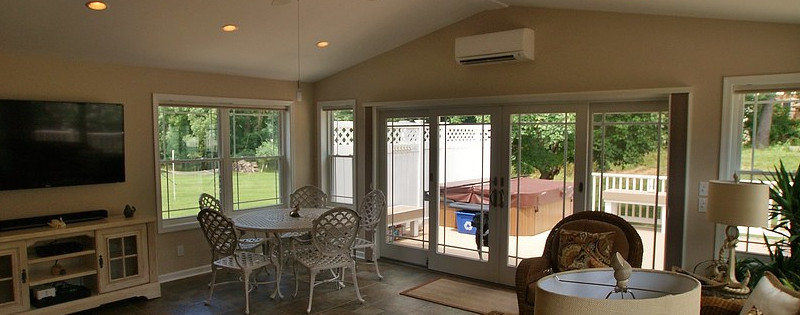
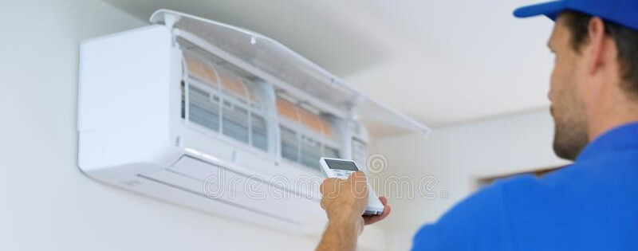
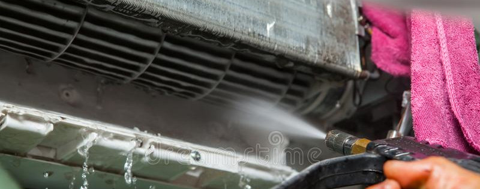

ATUAÇÃO
Residencial
Minha especialização é na parte residencial e em consultórios, com foco em manutenção e instalação de Split Hi Wall e Ar-condicionado de janela de todos os tamanhos e modelos.
QUEM SOU EU
Meu nome é Valdemar, trabalho com refrigeração há mais de 37 anos.
Hoje trabalho como empresa particular, meu propósito é entregar o melhor serviço no menor tempo possível com um atendimento personalizado para cada situação desde o orçamento, auxílio na compra do melhor aparelho, uma instalação rápida e limpa até o fechamento de todos os procedimentos necessários para que tudo esteja funcionando de forma segura e econômica.
SERVIÇOS
Instalação
Minha meta é a instalação completa para que todo o serviço seja feito de uma vez no menor tempo possível, faço a ligação da parte elátrica (se necessário, troco a voltagem da tomada para 220v), montagem do dreno e quebrar a parade para embutir a tubulação, depois a fechamos com gesso ou massa, onde o cliente apenas irá se preocupar em chamar um pintor. Tudo isso seguindo as especificações para o melhor funcionamento possível do aparelho.
Manutenção
As manutenções aumentam o tempo de vida útil do seu aparelho e melhoram seu desempenho, para uma limpeza mais eficiente, desmontamos a evaporadora para lavar as peças onde se concentram os fungos e bactérias. A limpeza anual do ar-condicionado é fundamental para que o ar do ambiente fique limpo, evitando doenças respiratórias.